Last modified: Thu Aug 16 2018 22:49:02 GMT+0800 (Malay Peninsula Standard Time)
Chapter 1. Bootstrap Framework
The easiest way of styling your Web Page is to use a framework. There are many framework that allows you to style your Web Page. In this Chapter, we are going to see how to use Bootstrap framework to style our website. It may not look as good as the fancy websites that you see everyday, but it does the job. An alternative of front end framework is Material Design.
1.1 Install Bootstrap Gem
Before we are able to install the Gem, we have to read the documentation that the Gem provide. The document will include important information on how to install, configure and use the Gem in our application. Head to Bootstrap’s Github page and scroll down to the read me section. Figure 1.1.1 shows Bootstrap’s readme section in Github page.

Figure 1.1.1: Readme file in Bootstrap’s Github Page
By following the instruction provided in the Github Page, the first step is to add the following lines of code to your Gemfile and save it. I recommended adding the Gem at the top of the Gemfile instead of at the bottom. Figure 1.1.2 shows the operation of adding the code the respective file as shown in Table 1.1.1.
Do note that your Web Server should not be running while you are trying to add or remove a Gemfile. Secondly, the arrangement of Gems matter! You have to prioritize (arrange) them based on how you use it.
Table 1.1.1: Code to add to Gemfile
#MyApp/Gemfile
gem 'bootstrap-sass', '~> 3.3.6'
gem 'sass-rails', '>= 3.2'
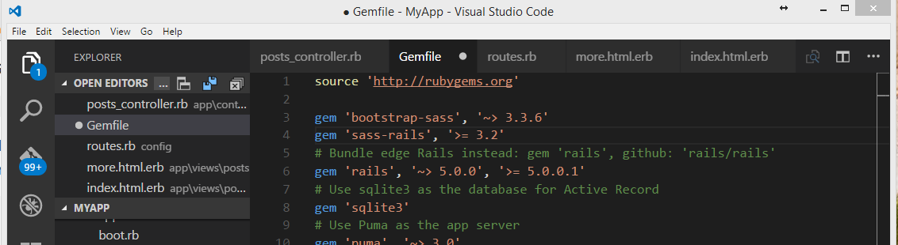
Figure 1.1.2: Code added to the top of the Gemfile
Whenever we add a Gem to our Gemfile, we have to run the command bundle install. In the terminal, type in the following code below to install the Gem listed in your Gemfile.
bundle install
If you wished to update all the Gem to your Gemfile to the latest version, use the command bundle update. It may be necessary to update the Gem if you see your terminal shows that your Gem is outdated.
At this point, you may get an error as shown in Figure 1.1.3. According to the error message, it tells us that sass-rails exists twice with different version in our Gemfile. We can see that the error message is caused by the code in Line 12 of the Gemfile.
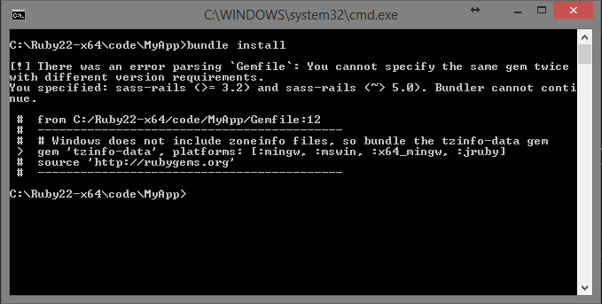
Figure 1.1.3: Error installing Gem
To fix the error, head to Gemfile and remove one of the sass-rails. Run the command bundle install again and you should be able to install the gem successfully. Figure 1.1.4 shows the Gems are installed successfully.

Figure 1.1.4: All Gems are installed successfully
1.2 Use Bootstrap Gem
Now, we will try to import the Bootstrap files. The operations carried out below are based on the Bootstrap’s readme file. Add the code as stated in Table 1.2.1 to the respective file. If you are unable to find application.scss file, rename application.css to the respective extension required. Do not remove any of the code in green. Figure 1.2.1 shows the result of the operation stated in Table 1.2.1.
Table 1.2.1: Import Bootstrap Library
#MyApp/assets/stylesheets/application.scss
@import "bootstrap-sprockets";
@import "bootstrap";
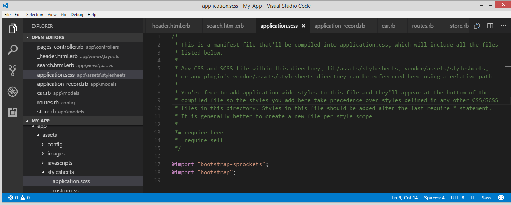
Figure 1.2.1: Result of the operation stated in Table 1.2.1
The next step would be adding two lines of code into the javascript file. Add the following code into the specified file below. You should not add both lines of code in Table 1.2.2 to the Javascript file as one of them already exists. Figure 1.2.2 shows the operation after justifying which code from Table 1.2.2 to add.
Table 1.2.2: Import Bootstrap JS Library
#MyApp/assets/javascripts/application.js
//= require jquery
//= require bootstrap-sprockets
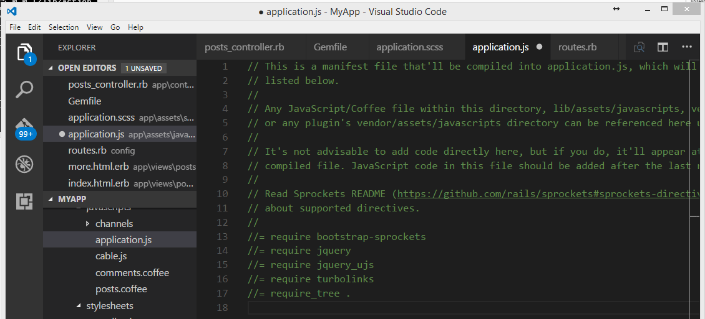
Figure 1.2.2: Result of Javascript file
Now start your server. If you do not receive error while redirecting to you application, you have done everything correctly. However, if you received some errors, you have to check back and see what you have done wrong. Figure 1.2.3 shows the result of the web application after the Bootstrap Gem is installed and used correctly.
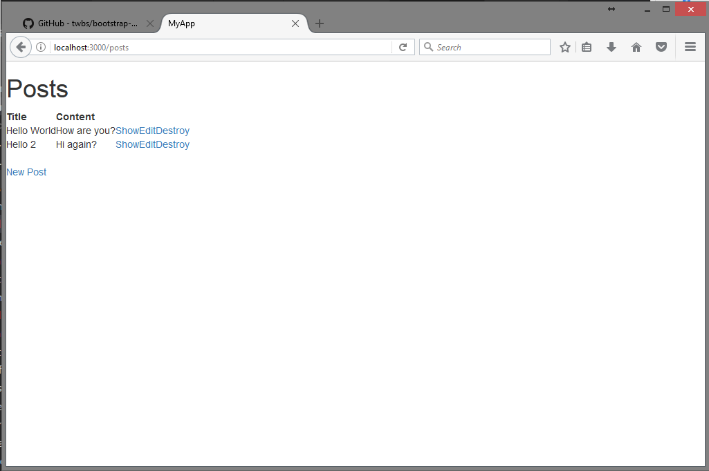
Figure 1.2.3: Result of Webpage after Bootstrap Gem is installed and used correctly
1.3 Containers
Based on Figure 1.2.3, we see that we have a quite terrible webpage as everything sticks to the leftmost part of the browser. This is due to the missing configuration in Bootstrap layout. To fix this, we have to use a container. Container is an element that wrap site contents into Bootstrap grid system. In a simpler word, container contains some code that will automatically set the padding and margin of our page based on the screen width.
According to Bootstrap Website, to implement the container, we have to wrap our container around our content. The code for the container is attached below.
<div class="container">
...
<div>
Add the code above to the Ruby on Rails application layout as shown in Table 1.3.1. Figure 1.3.1 shows the code after the operation is carried out. Do note that the in Table 1.3.1 should goes between the <body> … </body>.
Table 1.3.1: Add container to our application
#MyApp/views/layouts/application.html.erb
<div class=”container">
...
<div>
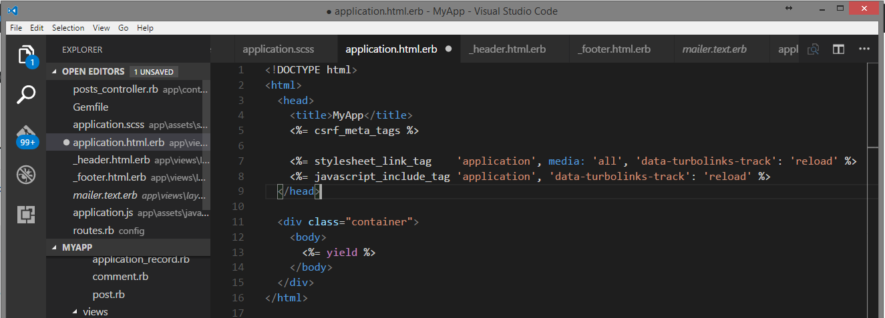
Figure 1.3.1: Add container to our application
Now, reload your webpage and you will see that the page is a responsive to the width of your browser window. Adjust the width of your browser will notice that the content is scaled dynamically. Figure 1.3.2 shows the result of Web Page after a container is added.
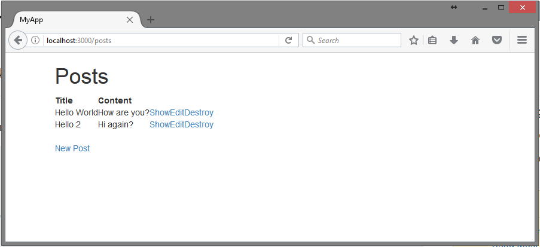
Figure 1.3.2: Result of Web Page after a container is added
To learn more about bootstrap, head to w3school.com. The website explains and has great example on Bootstrap framework.
1.4 Header and Footer
Navigation bar in the Website allows us to navigate from page to page easily. To begin adding a Bootstrap header to our application, head to w3school website and copy the any of the Navigation Bar example. The code you copied should goes before the container as shown in Figure 1.4.1.
You may also refer to Bootstrap Navigation Bar’s example. The navigation bar from w3school website will grouped in mobile view. You have to do slight modification on the code in order for it to be grouped together.
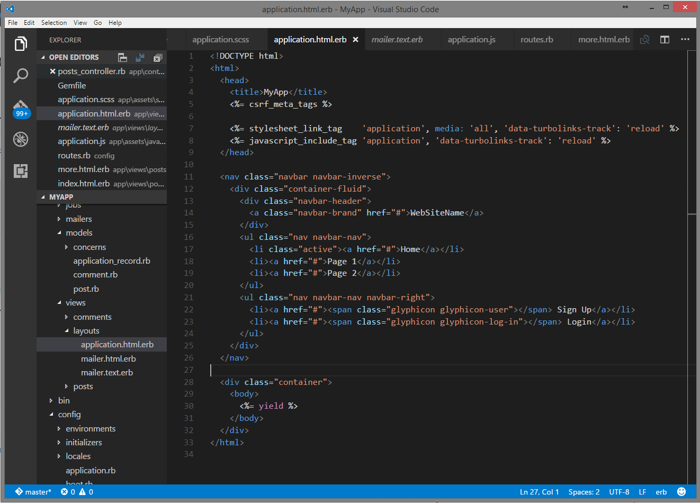
Figure 1.4.1: Result of the code after a Navigation Bar is added
Reload your website and you should see something similar to the Figure 1.4.2.
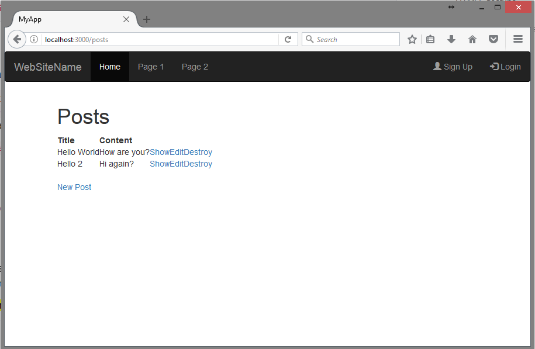
Figure 1.4.2: Result of Web Page after a Navigation Bar is added
For footer, check Bootstrap’s documentation. The operations required are similar.
As we can see from Figure 1.4.1, our code starts to look long and messy. To solve this, we can use Ruby on Rails’ ActionView partial. Create a partial, shown in Figure 1.4.3, for header by creating a file name _header.html.erb at the same directory where application.html.erb is in. Move the Navigation Bar’s code, as shown in Figure 1.4.4 to _header.html.erb and replace the code you moved away with <%= render '/layouts/header' %> as shown in Figure 1.4.3. Reload your current webpage and you should still get the same layout as before.
You do not have to include an extension or path for your partial. However, in this case, we have to include the layout directory in order for the application to find the partial file. In general, we do not have to include the directory if the partial is created within the folder of your view (e.g. Posts).
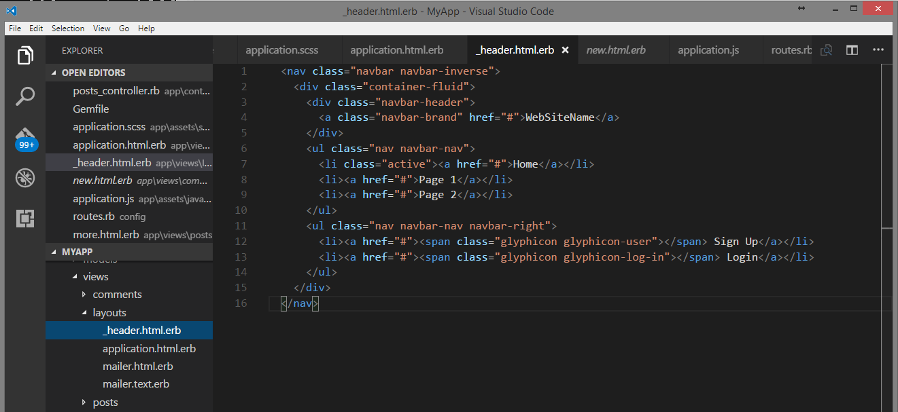
Figure 1.4.3: Code moved into partial
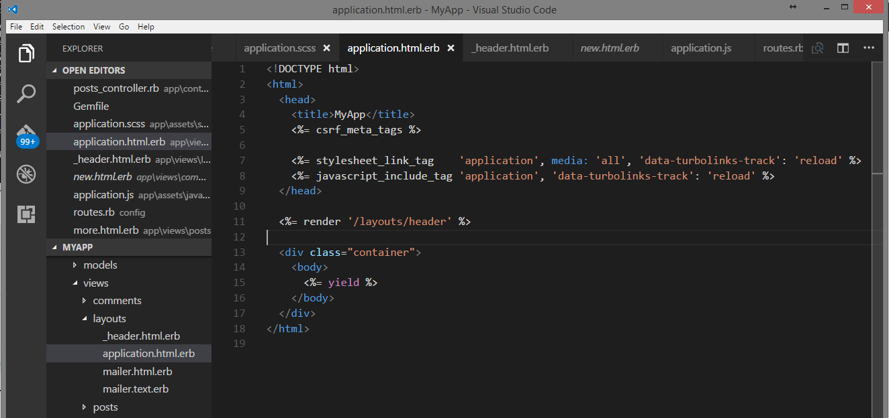
Figure 1.4.4: Code replaced by partial
Repeat the same process for moving your creating a partial for your footer (if you have one).
1.5 Style a Form
There are many ways to style a form. However, there is a way that you can style your form without needing to modify the code extensively.
Hint 1: Google is your best friend!
Hint 2: You may have to use a Gem.
Hint 3: It is related to “helper”.
Hint 4: You only have to replace one word in the form method.
1.6 Bootstrap Button Style
There are six predefined styles of buttons in Bootstrap. Below are the predefined classes:
.btn-default.btn-primary.btn-success.btn-info.btn-warning.btn-danger
You may also refer the information above from Bootstrap’s Website. Table 1.6.1 shows six different buttons style listed above.
Table 1.7.1: Bootstrap button style sizes
| Class | Button | Code |
|---|---|---|
| Default | 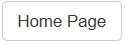 | <%= link_to "Home Page", root_path, :class => "button btn btn-default" %> |
| Primary | 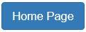 | <%= link_to "Home Page", root_path, :class => "button btn btn-primary" %> |
| Success | <%= link_to "Home Page", root_path, :class => "button btn btn-success" %> |
|
| Info | 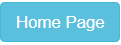 | <%= link_to "Home Page", root_path, :class => "button btn btn-info" %> |
| Warning | <%= link_to "Home Page", root_path, :class => "button btn btn-warning" %> |
|
| Danger | <%= link_to "Home Page", root_path, :class => "button btn btn-danger" %> |
1.7 Bootstrap Button Size
There are four different button sizes in Bootstrap. Below are the four predefined classes:
.btn-lg.btn-md.btn-sm.btn-xs
You may also refer the information above from Bootstrap’s Website. Table 1.7.1 shows four different buttons with different style and sizes based on the four button sizes listed above.
Table 1.7.1: Buttons with different sizes
| Class | Button | Code |
|---|---|---|
| None | 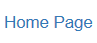 | <%= link_to "Home Page", root_path %> |
| Extra Small | <%= link_to "Home Page", root_path, :class => "button btn btn-primary btn-xs" %> |
|
| Small | 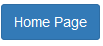 | <%= link_to "Home Page", root_path, :class => "button btn btn-primary btn-sm" %> |
| Medium | <%= link_to "Home Page", root_path, :class => "button btn btn-primary btn-md" %> |
|
| Large | 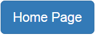 | <%= link_to "Home Page", root_path, :class => "button btn btn-primary btn-lg" %> |